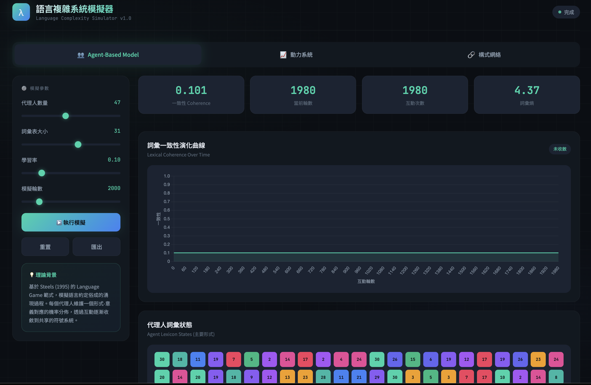

這篇從蟻群到AI：揭秘「湧現」法則如何創造智慧與秩序 提出了一些有趣的觀點。以下改寫成較嚴謹、可追溯依據的版本；同時加進把「語言」視為複雜適應系統（complex adaptive system, CAS），並討論語言的湧現行為。
0. 導言：為什麼「看似聰明」常常不是「有人在設計」
當我們看到蟻群能找到最短路徑、鳥群能整齊轉向、城市交通會突然塞成一團、或大型語言模型（LLM）在某些任務上能力似乎「突然長出來」，直覺很容易跳到兩個極端：
- 背後一定有中央控制（蟻后是 CEO、模型裡藏了一個小小工程師）。
- 這是神祕的“強湧現”：宏觀秩序是「原理上不可由微觀推得」的全新實體。
比較嚴謹的做法是：先把「湧現」分清楚，並且在每個例子裡問同一個問題：我們看到的是「不可推導」，還是「可推導但需要新的有效描述」或是「計算上難以直接推出」？
1. 什麼是湧現：弱湧現 vs. 強湧現
弱湧現（weak emergence）
Bedau 對「弱湧現」的典型說法是：宏觀性質在原理上可以由微觀規則產生，但往往無法用簡單的解析推導得到，通常需要模擬／計算才能看見它的出現 1。這種立場在複雜系統與非線性動力系統研究裡很常見。宏觀規律並非魔法，而是可由底層互動生成，只是很難靠手算「一眼推到」。
強湧現（strong emergence）
強湧現則主張，宏觀性質在本體論上是新的、甚至涉及某種「向下因果」，因此即使知道所有微觀定律，也在原理上推不出。這是哲學上更激進、也更具爭議的主張 2。把湧現一開始就定義成「原理上不可推導」很容易不小心把讀者帶進強湧現的領地。
2. 「秩序」怎麼在自然界長出來：相變、耗散結構與第二定律
相變不是“突然變魔術”，而是控制參數跨過臨界區
水結冰、鐵磁體失磁、甚至某些群體行為「突然協調」常被拿來類比湧現。這個類比的核心其實是： 當控制參數（溫度、密度、耦合強度、噪音、連結率）跨過臨界區，系統會出現新的穩態或新尺度行為。 「突然」常是我們用宏觀指標測量時的主觀感受；在更細的尺度上，可能是連續但非常陡峭的變化。
耗散結構：它沒有推翻第二定律，它只是提醒你別把開放系統當封閉系統
貝納德對流、颶風、渦流等「有序結構」常被描述成「熵增加的宇宙中竟然長出秩序」。更嚴謹的說法是：
- 這些結構是開放系統（有能量／物質通量），在遠離平衡時可以形成穩定的空間–時間圖樣 (4)。
- 第二定律針對的是孤立系統總熵不減；開放系統的局部降熵，通常伴隨對外更大的熵產生，並不矛盾。
因此「耗散結構顛覆第二定律」這句話比較恰當的改寫是：
耗散結構顛覆的是「把第二定律錯用在開放系統」的直覺，而不是第二定律本身。
3. 幂律與自組織臨界性（SOC）
很多現象（地震規模、金融波動、神經雪崩、城市規模、字頻）都呈現胖尾分布或近似幂律。SOC 提供了一個重要機制框架：大型耗散系統在緩慢驅動下可能自發靠近臨界狀態，導致跨尺度的雪崩事件 (5)。
但更嚴謹的但書是：
- 看到幂律不等於證明 SOC。不同生成機制都可能產生幂律，必須看相關長程關聯、臨界指標等更完整證據 (6)。
- 因此把「幂律」直接外推成「壓制小波動會導致超級崩潰」這種政策寓意，在不同系統（生態、金融、治理）中要非常謹慎；很多制度性系統的因果鏈比 SOC 模型假設複雜得多 (7)。
4. 把焦點轉向語言：語言是複雜適應系統，文法與語意可以是「使用中湧現」
語言是複雜適應系統：不是比喻，是研究綱領
這裡的關鍵不是「語言很複雜」這句廢話，而是語言結構的解釋單位應從“句子/文法規則”往“互動—收斂—慣例”的動態過程移動。 “Language is a Complex Adaptive System” 這個論說認為語言由多代理人（說話者）互動構成；語言結構（規律、類型、慣用法）會在使用中、在社群中動態重組，並呈現非線性、階段式轉換等特徵 (8)。
這裡的「湧現」通常是弱湧現：
- 沒有人在中央設計整套文法
- 但局部偏好、社群互動、學習偏誤、溝通壓力，會把系統推向某些穩定結構
語言湧現的三種典型路徑
慣例如何湧現：從語言遊戲到文化傳遞。
(A) 社群互動的自組織：Naming Game Steels 系列工作用代理人互動模型展示：在反覆的命名協商中，群體可以從多對多的混亂對應，收斂出共享詞彙與較穩定的約定（convention）(9)。
(B) 文化傳遞的壓縮：Iterated Learning Kirby 等人指出，語言的設計特徵（如組合性、可壓縮的規律）可由 iterated learning 解釋：每一代的產出成為下一代的輸入，學習瓶頸與表達需求的拉扯會讓語言結構逐步朝「可學又可用」的方向演化 (10)。
(C) 統計規律的跨尺度：Zipf 與字頻結構 字頻的 Zipf 現象是語言宏觀統計的經典例子；但更細緻的研究指出，真實語料的 rank–frequency 結構並不只是「漂亮的直線」，而包含可重現的偏離與更複雜的形狀，暗示生成機制不止一種 (11)。
若把「語言」視為一個由個體互動、學習偏誤與文化傳播共同驅動的系統，那麼「詞彙–語法–語意」的某些規律，確實可以被視為在使用中湧現的宏觀結構。
5. 回到 AI：LLM 的「湧現能力」到底是什麼？它可能同時是真現象、也可能是“尺的幻覺”
什麼叫 LLM emergent abilities（原始定義）
Wei et al.（2022）把某些能力稱為 emergent：小模型幾乎做不到，但大模型突然在某個尺度上「看起來能做」；而且這個轉折不容易從小模型表現直接外推 (12)。
重要反駁：很多“突變”可能是度量方式造成的海市蜃樓
Schaeffer et al.（2023）指出：如果評分指標是非線性或不連續（例如 exact match / multiple-choice grade），就可能把本來平滑的性能成長「切」成看似突然的相變；換成連續度量或更好統計，突變感會消失 (13)。
更嚴謹的結論不是「湧現都是假的」，而是：
- “表現曲線的形狀”很大程度依賴你用什麼尺量
- 因此在談 LLM 湧現時，必須同時報告：多種度量、置信區間、以及跨模型家族的可重現性
機制層面的線索：induction heads 的確是候選，但仍屬進行式
機制可解釋性研究提出 induction heads 與 in-context learning 的關聯是重要線索；近期也有更形式化地討論 induction heads 在訓練過程中如何「出現／陡峭成形」。(14) 但把它說成「已完全解釋 LLM 湧現」仍過早；目前比較負責任的講法是：它提供一個可檢驗的機制假說集合。
6. 一個把「語言湧現」與「LLM 湧現」接起來的框架
若要把語言與 LLM 放在同一張圖上，建議用這三層：
微觀規則層：
- 人類：學習偏誤、加工限制、互動策略
- 模型：梯度下降、架構偏置、資料分佈、tokenization
中觀機制層（關鍵！）：語用對齊如何把社群推向共享結構
- 人類：命名協商、語用對齊、文化傳遞（Naming Game / Iterated Learning）(9)
把「語言湧現」的主要引擎，放在對話中的語用對齊（pragmatic alignment），去看人們在對話中透過多層次的對齊（詞彙、句法、語意、情境模型）逐步收斂，降低協調成本並建立可重用的慣例。
- 互動對齊模型（Interactive Alignment）
Pickering & Garrod 的互動對齊模型主張：對話者會在多層級表徵上透過 priming 等機制自動對齊，進而對齊情境模型；這提供了一個心理學層面的「中觀機制」：為何對話能快速達成協調，而不需要每次都做昂貴的心智模型推理。
- 共同基礎（Common Ground）與語言作為 Joint Action
Clark 在 Using Language 中強調語言使用是「共同完成的行動（joint action）」：共享知識/共同基礎不是背景設定，而是對話中持續被更新與利用的協調資源。這使得「語用」不是語言的附屬品，而是社群秩序形成的核心操作系統。
語用對齊把「一次對話的臨時協調」，變成「可累積的社群慣例」。
- 模型：注意力電路、induction head、表徵重組(14)
宏觀現象層：
這樣討論的好處是不必先在「強湧現 vs. 弱湧現」選邊站，而是把可檢驗的東西放在中觀機制層：哪些互動/學習機制，會導致哪些宏觀統計與能力分佈。且能與對話心理學的互動對齊模型、語言遊戲（naming games）與 iterated learning 框架形成可檢驗的整合模型。
7. 一個整合性的主張
語言湧現 =「對齊動力學」＋「文化傳遞選擇壓」＋「效率約束」
一個可操作的整合框架（可視為研究綱領，不是定理）
對齊動力學（dialogue alignment） 讓個體互動快速收斂，生成短期可重用的慣例。
文化傳遞（iterated learning） 把局部慣例放大為社群規律，並使結構受可學性/表達性塑形。
效率約束（efficiency pressures） 讓語言系統在資訊傳遞與認知成本之間取得折衷，形成跨語言的統計與結構傾向。
語言的秩序不是天降的，是對話者在「省事」與「說清楚」之間反覆協商的副產品。（學界會皺眉，但資料通常會點頭。）
避免湧現變成「因為水逆」，應該讓湧現離開口號，進到實驗設計。 可能的幾個預測假說：
- P1：對齊強度 ↑ ⇒ 慣例收斂更快、但多樣性更易崩塌
在互動頻繁、社群邊界緊密的網絡中，詞彙/構式更易形成穩定慣例；但同時方言/變體更可能被“吸平”。（可用社群網路結構＋語料漂移測試。）
- P2：共同基礎不對稱 ↑ ⇒ 語用策略更倚賴明示標記與冗餘
當說話者對聽話者的知識狀態估計更不穩定（弱 common ground），語言會偏向更顯性、更高冗餘（如明示指稱、重述、保險性修飾）。這與「語言作為 joint action」的可預期結果一致。
- P3：傳遞瓶頸 ↑ ⇒ 結構組合性/規律性 ↑
iterated learning 框架預期：在輸入受限或噪音較大時，語言更容易演化出可壓縮的規律與更清晰的組合性。
- P4：效率壓力 ↑ ⇒ 形式更短/更可預測，但語用推理負擔可能上升
效率研究指出語言在成本與資訊量間平衡；在更強效率壓力下，形式可能更精簡，但需要更多語用推理補足訊息缺口。
CAS 視角的價值在於：它把「語言結構從何而來」從靜態描述，變成動態生成的問題；而語用對齊提供了可實驗、可建模的中觀機制，讓語言演化不必只靠宏大敘事。以「對話中的語用對齊」作為語言湧現的核心中觀機制，並以文化傳遞與效率約束作為跨時間尺度的選擇壓。這一框架同時產生可檢驗預測，並能統合語料研究、心理實驗與代理人模擬。

Citation
@online{2026,
author = {, K-AI},
title = {語言作為一種複雜適應系統 (1)},
date = {2026-01-31},
url = {https://loperntu.github.io/posts/2026-01-31/},
langid = {en}
}